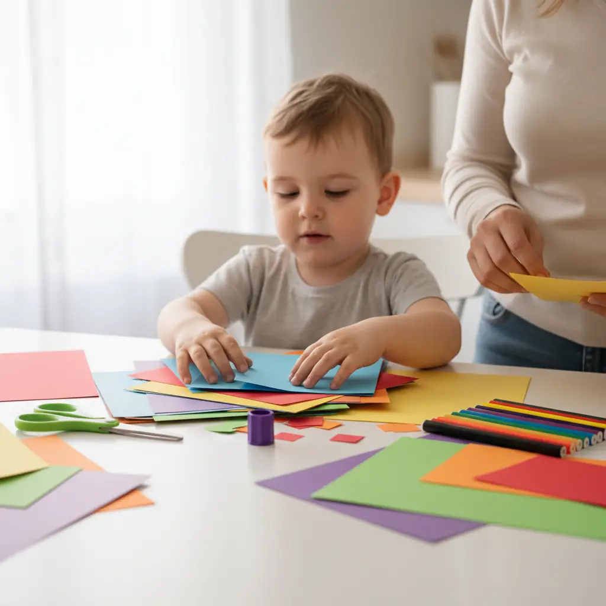
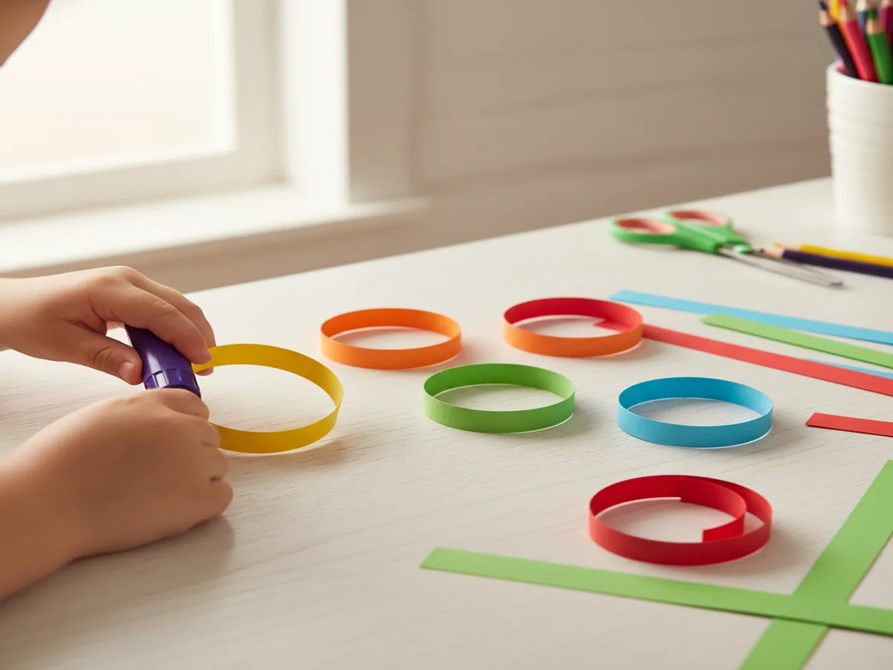
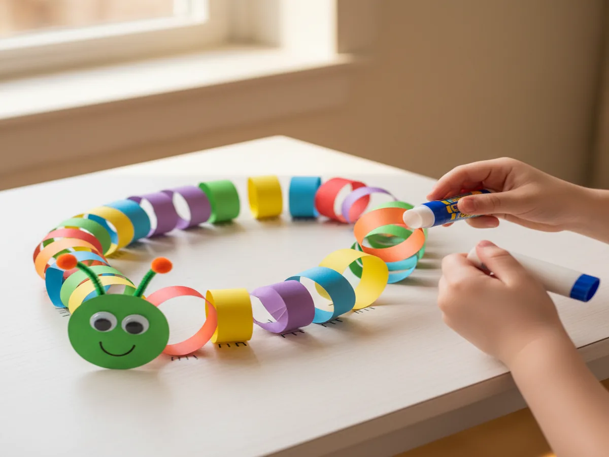
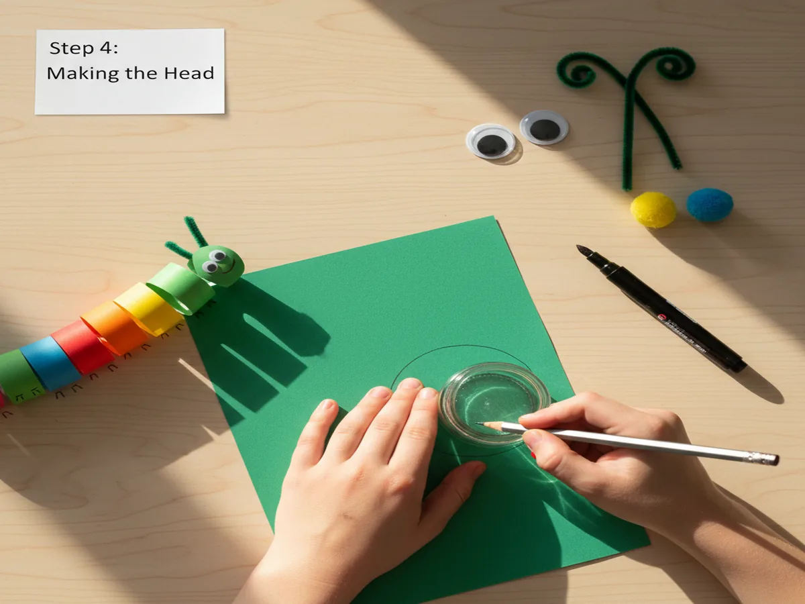
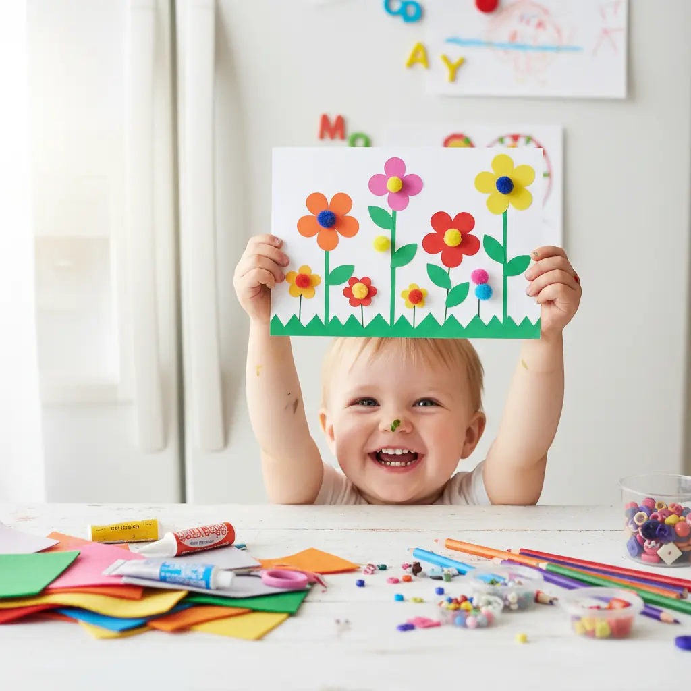

If you've ever needed a quick activity to keep little hands busy on a rainy afternoon, you already know that a good craft using paper is worth its weight in gold. This adorable paper caterpillar is so simple, so colorful, and so satisfying that your kiddos will literally beg to make it over and over — and the whole thing comes together in about 20 minutes flat. Grab your paper stash and let's get crafting!
Why Kids Love This Craft
There's something magical about watching a flat sheet of paper transform into a wiggly, 3D caterpillar right before your eyes. Kids get to practice cutting, folding, and gluing — all those fine motor skills that teachers love — while feeling like they're just having a blast. The bright colors and bouncy body make this an irresistible fun paper craft for preschoolers that builds confidence with every loop they add.
Best of all, every caterpillar turns out unique! Whether your child picks rainbow stripes or goes all-in on their favorite color, there's no wrong way to make one. That creative freedom is what turns a simple afternoon project into a craft they'll want to repeat again and again. It's the perfect easy craft using paper for kids of all skill levels.
What You'll Need
- Colored construction paper (9" x 12" sheets) — at least 4–5 different bright colors like green, red, yellow, orange, and blue
- Washable glue sticks — at least 1 per child (we love the purple-goes-on-clear kind so kids can see where they're gluing)
- Kid-safe scissors — blunt-tip, easy-grip handles work best for little hands
- Self-adhesive googly eyes (10mm, black and white) — 2 per caterpillar
- Washable black marker (broad tip) — for drawing the mouth and details
- Green pipe cleaners (chenille stems) — 1 per caterpillar, for the antennae
- Small craft pom-poms (1/2 inch, assorted colors) — 2 per caterpillar to top the antennae
- A pencil for tracing (any regular pencil you have at home)
- A clean, flat table or craft mat to work on
Step-by-Step Instructions
-
Step 1: Cut Your Paper Strips
Help your child cut 8–10 strips of construction paper, each about 1 inch wide and 6 inches long. This is a fantastic opportunity for little ones to practice their scissor skills! For toddlers, you can pre-cut the strips and let them pick their favorite colors. Encourage mixing and matching — the more colorful, the better. A rainbow pattern looks absolutely adorable, but random colors are just as fun. This is why a craft using paper is so great — you can customize it endlessly with whatever colors you have on hand.

-
Step 2: Create the Body Loops
Take one strip of paper and curl it into a loop (like a circle) with the ends overlapping by about half an inch. Have your child press a glue stick along the overlap and hold it for a few seconds until it sticks. Repeat with all remaining strips. Don't worry if the loops aren't perfectly round — wobbly loops give your caterpillar extra personality! This is the step where the magic really starts to happen, and kids absolutely light up when they see those flat strips turn into puffy, round body segments. It's truly a wonderful craft using paper and glue for kids that feels rewarding at every stage.

-
Step 3: Connect the Body
Now it's time to build the caterpillar! Apply glue to the side of one loop and press the next loop against it, slightly overlapping so they stick together. Continue attaching loops one by one in a gentle curving line — this creates that classic wiggly caterpillar shape. You can curve the line to the left or right, or even make an S-shape if your child is feeling adventurous. Lay the connected body on its side on the table and gently press each connection point to make sure everything holds. If a loop pops off, just add a little more glue and press again — no stress!

-
Step 4: Make the Head
For the head, cut a circle about 3 inches across from a piece of construction paper. You can trace around a small cup or jar to get a nice round shape — let your child pick the color! Stick on two googly eyes near the top of the circle. Use the black washable marker to draw a big, happy smile underneath. Now for the antennae: cut one pipe cleaner in half, curl each piece at the top, and glue a small pom-pom onto each curl. Attach the straight ends of the pipe cleaner halves to the back of the head circle with a generous dab of glue. Hold for about 10 seconds until secure. Your caterpillar now has the cutest little face!

-
Step 5: Attach the Head and Add Details
Glue the finished head circle to the front of the first body loop, pressing firmly for a few seconds. Let everything dry for about 2–3 minutes. While you wait, your child can use the marker to draw tiny feet along the bottom of each loop, or add spots, stripes, or hearts to the body segments for extra flair. And just like that — you have the most charming paper caterpillar on the block! Stand it up on a shelf, tape it to the fridge, or line up a whole caterpillar family. This simple paper craft for toddlers and preschoolers always gets the biggest smiles.

Tips for Success
- For toddlers (ages 2–3): Pre-cut all the strips and the head circle beforehand. Let your littlest crafters focus on the fun parts — gluing loops, sticking on googly eyes, and choosing colors. That's more than enough to keep them engaged and proud of their creation.
- For preschoolers (ages 4–5): Let them do as much cutting as they can safely handle. Drawing a pencil line along the paper first gives them a guide to follow. They can also practice patterns — alternating two colors is a great early math skill hiding inside a craft!
- For older kids (ages 6–8): Challenge them to make extra-long caterpillars with 15+ loops, or try making the loops in graduated sizes from big to small. They can also write letters or numbers on each segment for a sneaky learning twist.
- Glue tip: Glue sticks are the cleanest option for this project, but if loops aren't holding well, a small dot of white school glue at each connection point works wonders. Just allow an extra minute of drying time.
Variations to Try
Bookworm Buddy: Turn your caterpillar into an adorable bookworm! Use all green paper strips and glue a tiny pair of paper glasses onto the face. You can even attach a mini paper book (just fold a small square in half) near the head. This makes a sweet bookmark or reading-corner decoration and gives you another fantastic paper craft idea for little kids who love story time.
Hungry Caterpillar Theme: If your kids love The Very Hungry Caterpillar by Eric Carle, use the same red-and-green color scheme from the book. Cut tiny fruit shapes from scrap paper and glue them around the body. This is a wonderful companion activity after reading the book together and makes the craft even more meaningful.
Seasonal Caterpillars: Swap out the colors to match any holiday or season! Use red, pink, and white strips for Valentine's Day; orange, black, and purple for Halloween; or red, white, and blue for the Fourth of July. Add stickers, glitter glue, or mini paper hearts and stars to match the theme. The basic technique stays the same, so once your kids master this craft using paper, they can adapt it all year long.
More Crafts You'll Love
If your little ones had a blast with this project, they'll go absolutely wild for these popular paper crafts from our blog:
- Easy Paper Plate Turtle Craft for Preschoolers (5 Simple Steps!)
- Gorgeous Paper Flower Craft for Kids — So Easy Even Toddlers Can Make a Beautiful Bouquet!
Final Thoughts
This 20-minute paper caterpillar is proof that you don't need fancy supplies or hours of prep to create something truly special with your kids. A craft using paper can be simple, budget-friendly, and absolutely magical — all at the same time. Whether your little one is a first-time crafter or a seasoned glue-stick pro, this project delivers smiles, giggles, and a whole lot of pride. If you give it a try (and we really hope you do!), snap a photo of your caterpillar crew and share it with us on Pinterest — we'd love to see your colorful creations! Happy crafting, mama! 💚